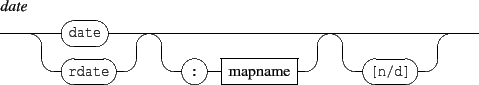

The loop operation is defined as follows:

It iterates the enclosed messages, which may refer to the current iteration using ident. A reference to the current iteration has the following form:

Depending on the current context, it is expanded as string, int32 or float32 parameter.